C&C '26 — Exhibition Plan
↔ Open the drag-and-drop layout board1 · Submission index
| Artist(s) | Artwork | Theme | |
|---|---|---|---|
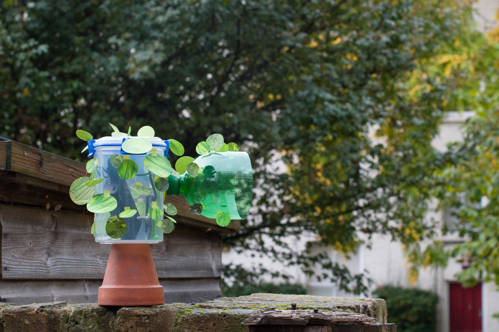 | Andy Boucher & Interaction Research Studio (Gaver, Brown, Matsuda, Ovalle, Sheen, Vanis), Northumbria | Portfolio of Research Products | D |
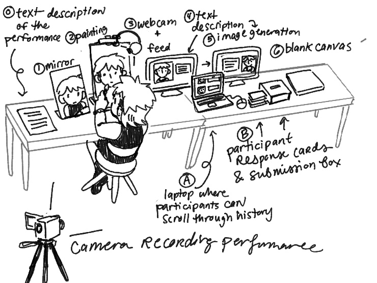 | SHM Garanganao Almeda, UC Berkeley | Artist-in-the-Loop [Recursive Self Portrait #03] | C |
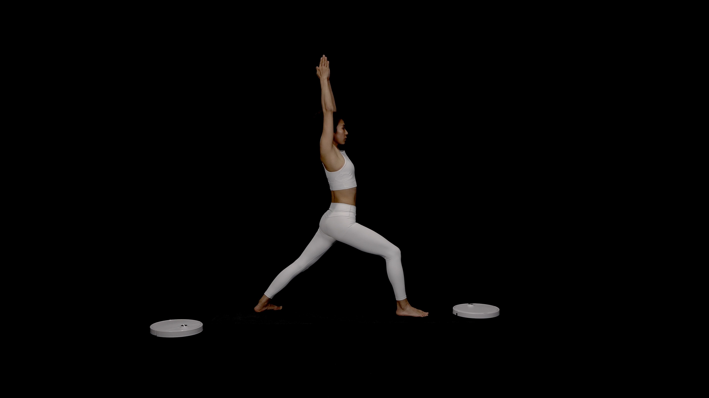 | Qiyao Chen, Loughborough | Spirit: A Tech-Ritual | B |
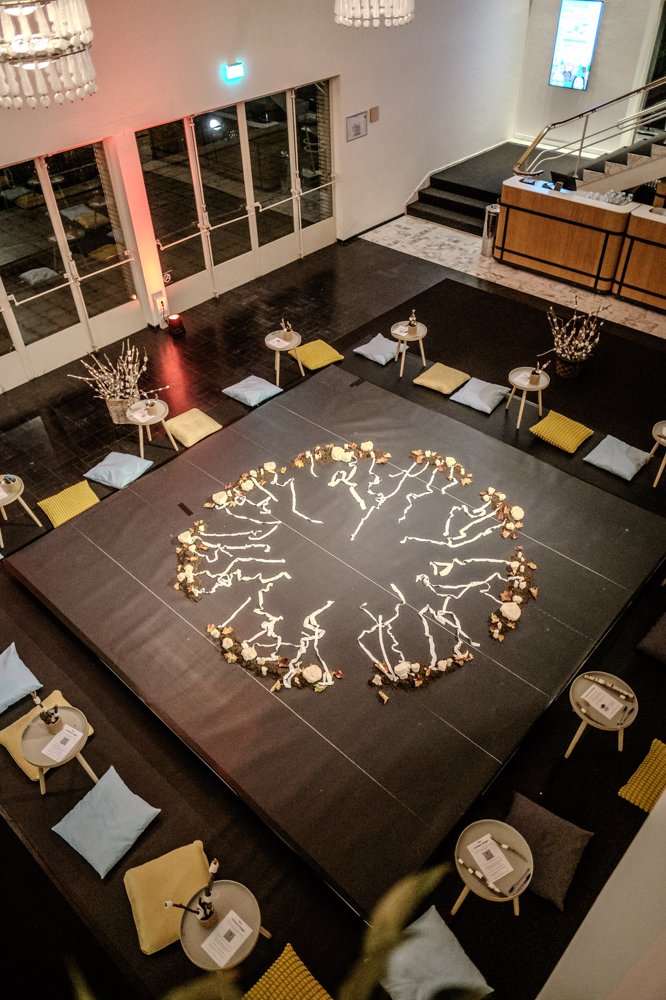 | Angelina Kumar | Hyphae of Kindness | A |
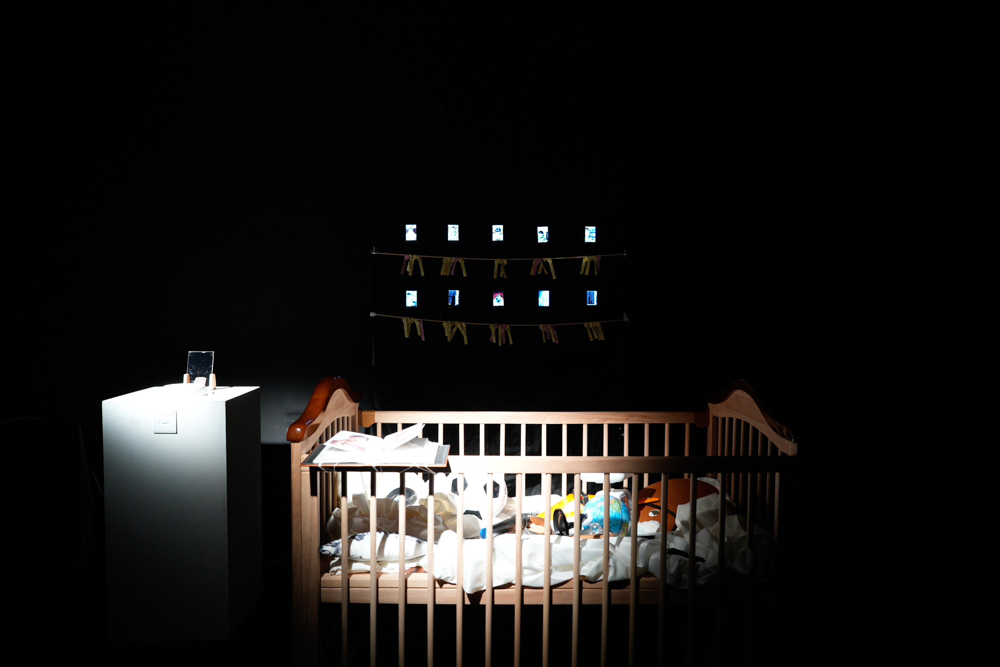 | Ray LC, Long Ling, Bowen Liu, Sijia Liu, City U Hong Kong | Cradle of Success | C |
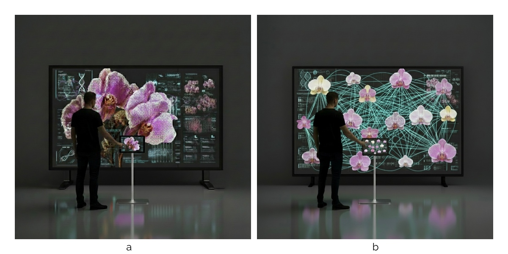 | Yawei Zhao et al., HKUST (Guangzhou) | The Blooming Archive | A |
 | Zhongjing Jiang & Yuanzhao Zhang | I Dream a Lot but I Never Sleep | B |
 | Cassandra Lee, Chuanqi Sun, Saetbyeol Leeyouk, MIT | Rock Talk | A |
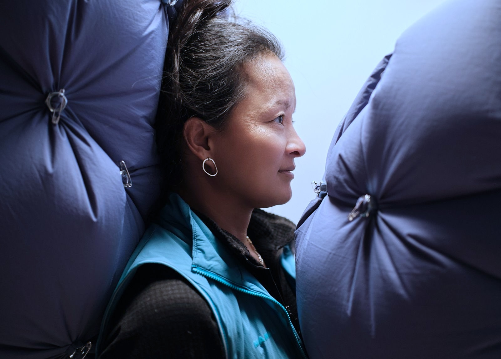 | Piyakorn Koowattanataworn, ITU Copenhagen | Breathe Kritisk | B |
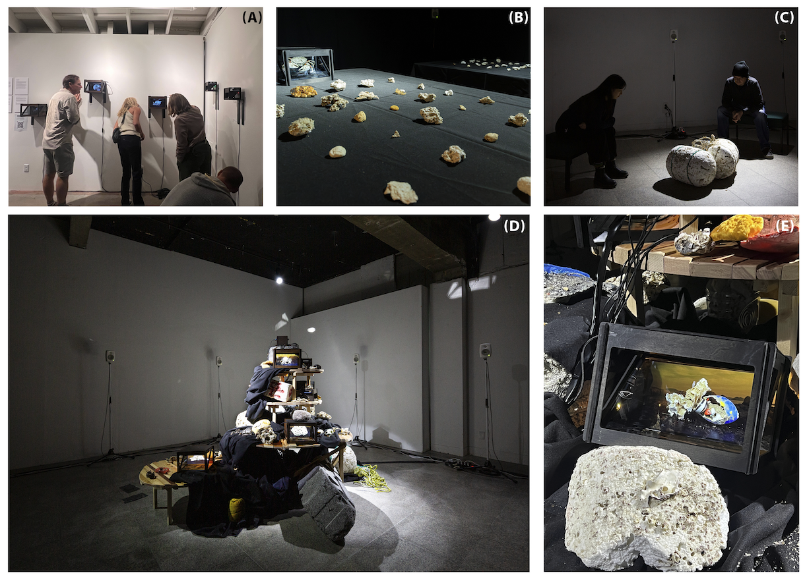 | Sabina Hyoju Ahn, Ryan Millett, Seyeon Park, UCSB | PlaSphere | A |
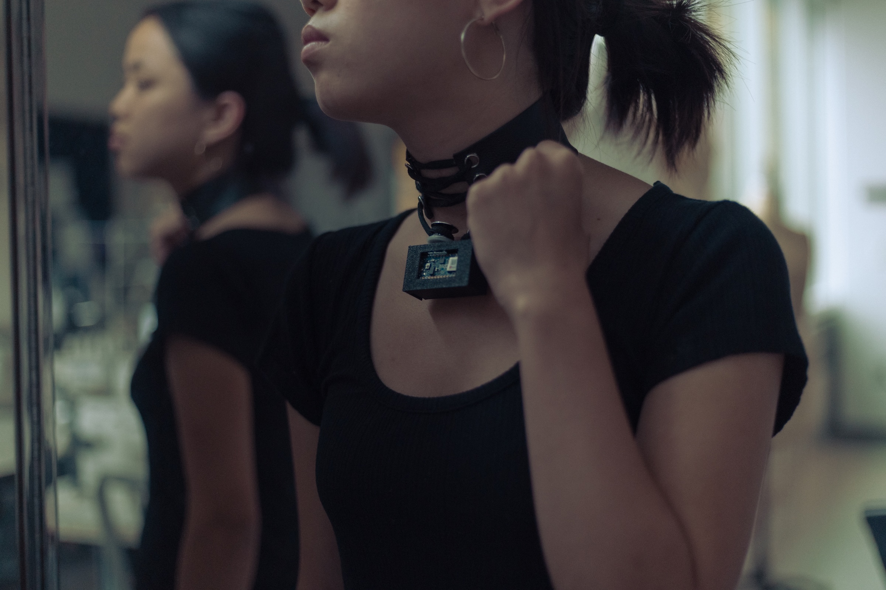 | Shuang Cai, Avery Ko, Sang Leigh, Cornell | Inter:Lace | C |
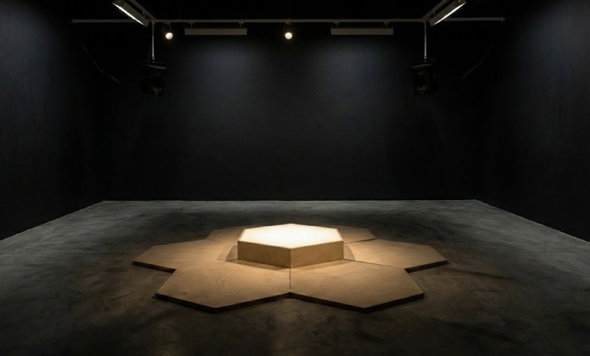 | Anonymous (under review) | Resident Thrum | B |
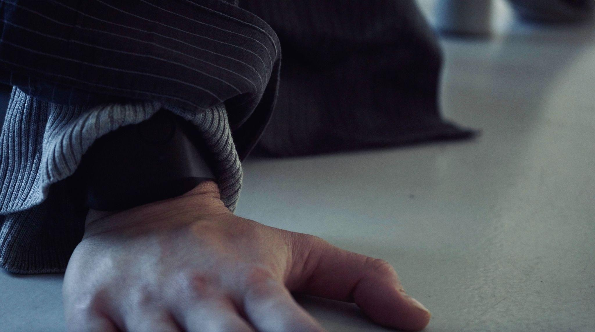 | Mona Hedayati, University of Cambridge | The Body & the Counter-Archive | B |
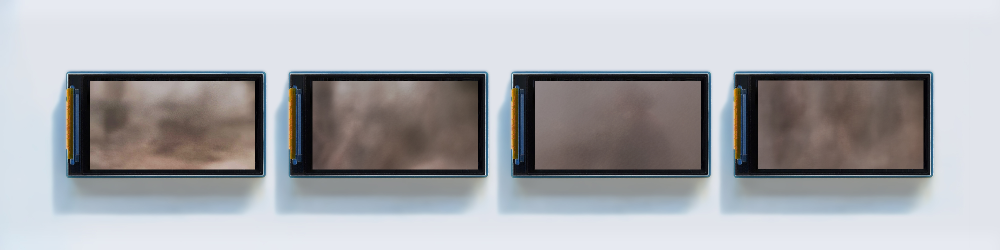 | Adam Cole & Mick Grierson, UAL | World Simulator | C |
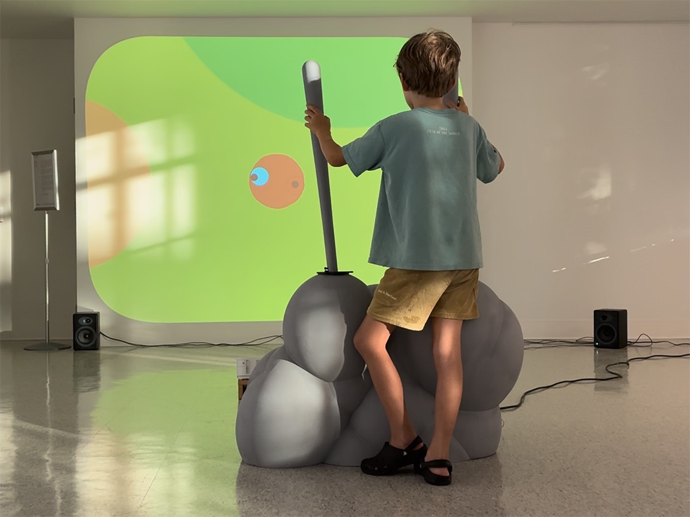 | Andrew Hieronymi, Penn State | CONTACT | A |
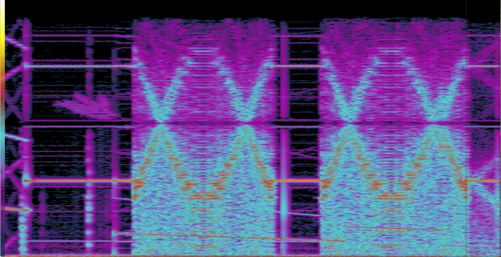 | Alexander Williams, Yutian Hu, Stefan Lattner, Mathieu Barthet | Adversarial Aesthetics | C |
 | Artist not named in files | Bend To (VR) | D |
Two works could not be name-labelled: Resident Thrum (paper anonymised for review) and Bend To (only a technical rider supplied). They're labelled by title — send the artists and they can be updated.
2 · Thematic grouping
A 🌱 More-than-Human Ecologies
- Hyphae of Kindness (Kumar) — mycelial care networks
- The Blooming Archive (Zhao) — human–plant relations, decolonial posthumanism
- PlaSphere (Ahn) — plastiglomerates, coastal ecology, AI-generated organisms
- CONTACT (Hieronymi) — microbiome & climate change through embodied play
- Rock Talk (Lee) — AI community garden; bridges A ↔ D
B 🫁 Bodies, Breath & Biofeedback
- Spirit (Chen) — breath-driven tech-ritual with robotic vacuums
- Breathe Kritisk (Koowattanataworn) — breath, trust and clinical control
- Resident Thrum — group cardiac synchronisation
- The Body & the Counter-Archive (Hedayati) — biosensing + sound; bridges to socio-political
- I Dream a Lot but I Never Sleep (Jiang) — embodied intimacy; bridges B ↔ C
C 🤖 AI, Authorship & Critical Machines
- Artist-in-the-Loop (Almeda) — hand-painting vs. generative image production
- Cradle of Success (Ray LC) — fortune-telling, stereotypes & generative AI
- World Simulator (Cole) — the limits/blindness of AI "world simulators"
- Adversarial Aesthetics (Williams) — steganography & data-poisoning as artist resistance
- Inter:Lace (Cai) — outsourcing social self-regulation to AI
D 🛋️ Everyday, Slow & Speculative Tech
- Portfolio of Research Products (Boucher / IRS) — two decades of slow, field-ready artefacts
- Bend To (VR) — speculative immersive experience
- I Dream a Lot but I Never Sleep (Jiang) — speculative companionship; bridges C/B ↔ D
3 · Spatial requirements (from each technical rider)
| Work | Footprint | Light | Audio | Notes |
|---|---|---|---|---|
| Boucher / IRS | 6 plinths + wall for prints | Ambient OK | Low | Unattended, no internet, mains power |
| Almeda | Table + 2 monitors + laptop | Ambient | Low | Performance moments |
| Chen (Spirit) | Life-scale projection | Shaded/recessed | Stereo | 7:30 loop |
| Kumar (Hyphae) | 3×3 m, soil, cushions | Ambient | Bluetooth headphones | Atrium-friendly |
| Ray LC (Cradle) | 5×4×3 m, 10 mini LED screens | Dim-ish | Low | Larger floor work |
| Zhao (Blooming) | 100" display + stand | Ambient | Low | Needs internet + GPU |
| Jiang (I Dream) | 2–3 × 3–4 m, two sofas | Low/warm | Reduced noise | Atrium-flexible |
| Lee (Rock Talk) | 12×12 ft rock garden + niche | Ambient | Headphone stations | Atrium-friendly |
| Koowattanataworn (Breathe) | 2 m-tall chamber | Ambient | Low | Performer-assisted |
| Ahn (PlaSphere) | 12–20 m², 2.5 m ceiling | Low/enclosed | Multichannel 8–16 spk | Holograms artist-installed |
| Cai (Inter:Lace) | Wall + mannequin display | Ambient | None | Retail/consumer-goods vibe |
| Resident Thrum | 4×4 m, black box | Black gallery | Sound isolation essential | Scheduled slots, biometric data |
| Hedayati (Counter-Archive) | 2×2 m, enclosure ideal | Low/darkness | Speakers | 30-min scheduled performance |
| Cole (World Simulator) | ~50×50 cm wall | Dim preferred | None | 4 tiny screens, plug-and-play |
| Hieronymi (CONTACT) | 12×9 ft wall + 12×9 ft floor | Dim-ish | Stereo | Short-throw projector, controllers |
| Williams (Adversarial) | Room or TV + headphones | Dark, acoustically treated | Stereo PA / deep listening | Bean bags, 20-min loop |
| Bend To (VR) | Station + spectator wall | Flexible | Headset | VR + wall projection mirror |
4 · Suggested layout (zones)
ENTRANCE
│
▼
┌─────────────────────────────────────────────────────────────┐
│ ATRIUM / OPEN SOCIAL SPINE (daylit, headphone-isolated) │
│ Boucher portfolio · Kumar · Lee · Jiang · Zhao · Cai · Cole │
└─────────────────────────────────────────────────────────────┘
│ │ │
▼ ▼ ▼
┌───────────────┐ ┌────────────────────┐ ┌────────────────────┐
│ DARK ROOM 1 │ │ DARK ROOM 2 │ │ PERFORMANCE / SLOTS │
│ "Deep AV" │ │ "Embodied black- │ │ (facilitated) │
│ Williams · │ │ box" │ │ Hedayati · │
│ Adversarial │ │ Resident Thrum │ │ Counter-Archive │
│ Ahn·PlaSphere │ │ (sound-isolated) │ │ Koowattanataworn · │
│ Hieronymi · │ │ Chen · Spirit │ │ Breathe Kritisk │
│ CONTACT │ │ (recessed proj.) │ │ Almeda (perf) │
│ Ray LC·Cradle │ │ │ │ Bend To · VR station│
└───────────────┘ └────────────────────┘ └────────────────────┘
- Open atrium spine — self-running, daylight-tolerant, audio-isolated-by-headphones works (Themes A & D); the social "front of house."
- Dark Room 1 (Deep AV) — projection/multichannel pieces needing low light + focused audio.
- Dark Room 2 (Embodied black-box) — sound-isolated, body-signal works. Keep apart from the other audio-primary rooms.
- Performance / scheduled zone — facilitated, time-slotted works; put a sign-up board here.
- Ensure a network drop near Zhao (needs internet); Boucher needs none.
5 · Figma board structure
- Legend & Themes — 4 colour swatches (A green / B blue / C orange / D grey) + key.
- Submission Wall — 4-column grid of all 17 works, thumbnail + artist/title, colour-tagged by theme.
- Floorplan — the zone diagram above as boxes; drop each thumbnail into its zone.
- Logistics — the §3 requirements as stickies (light / audio / power / scheduled flags) to surface conflicts.